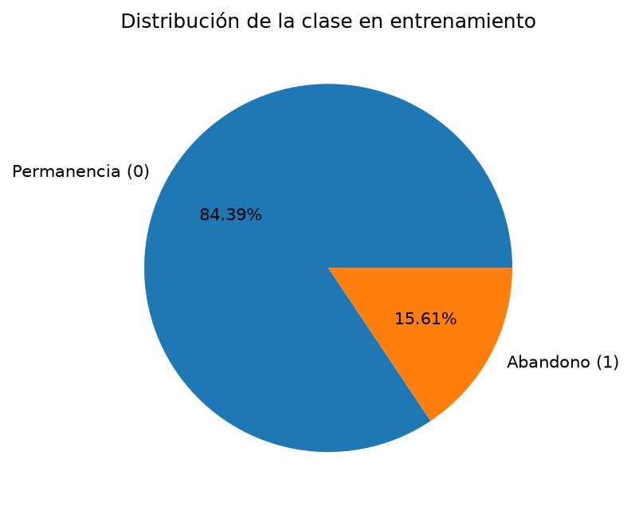
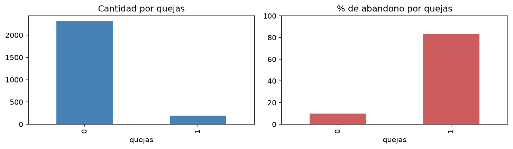
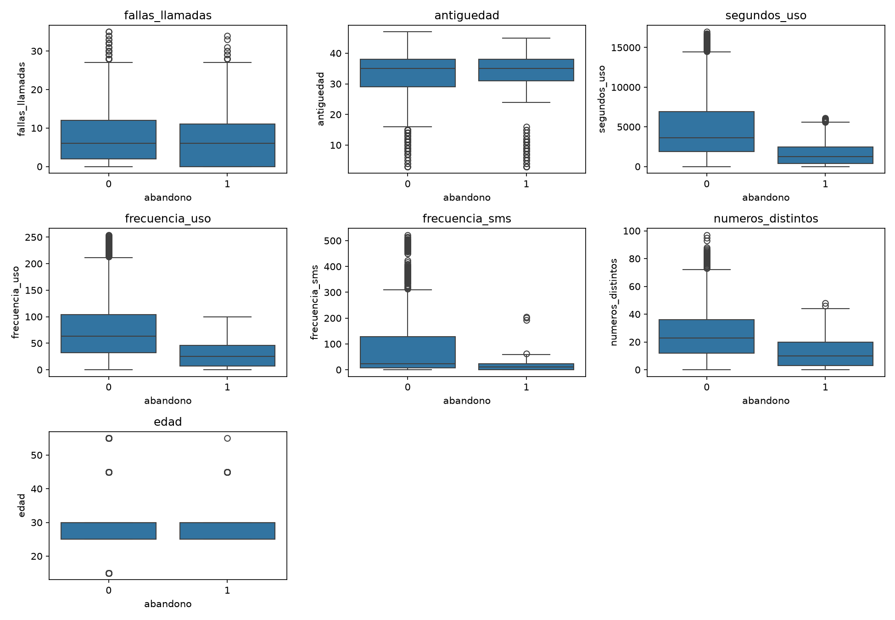
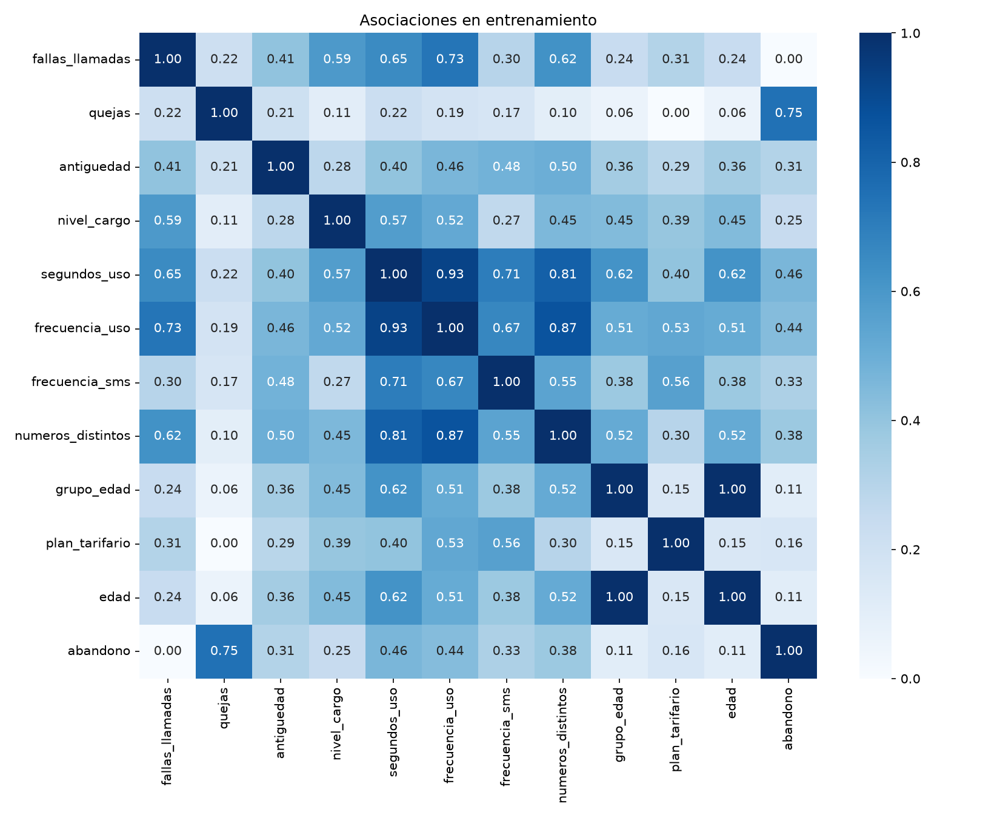
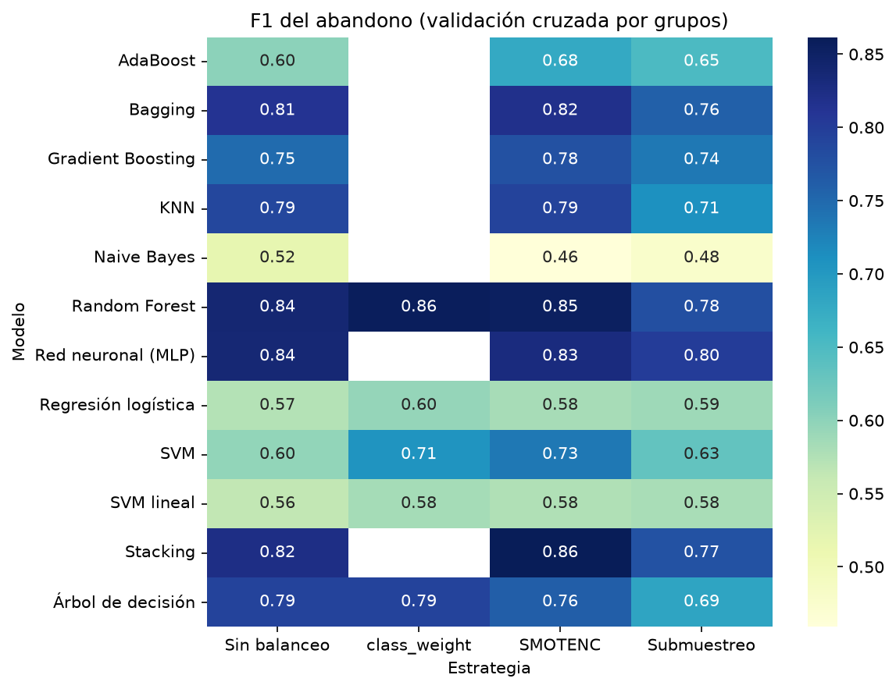
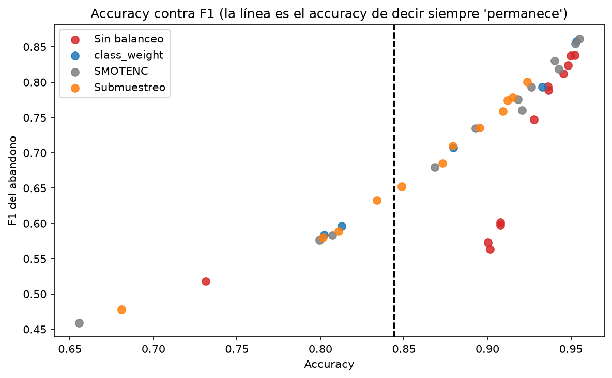
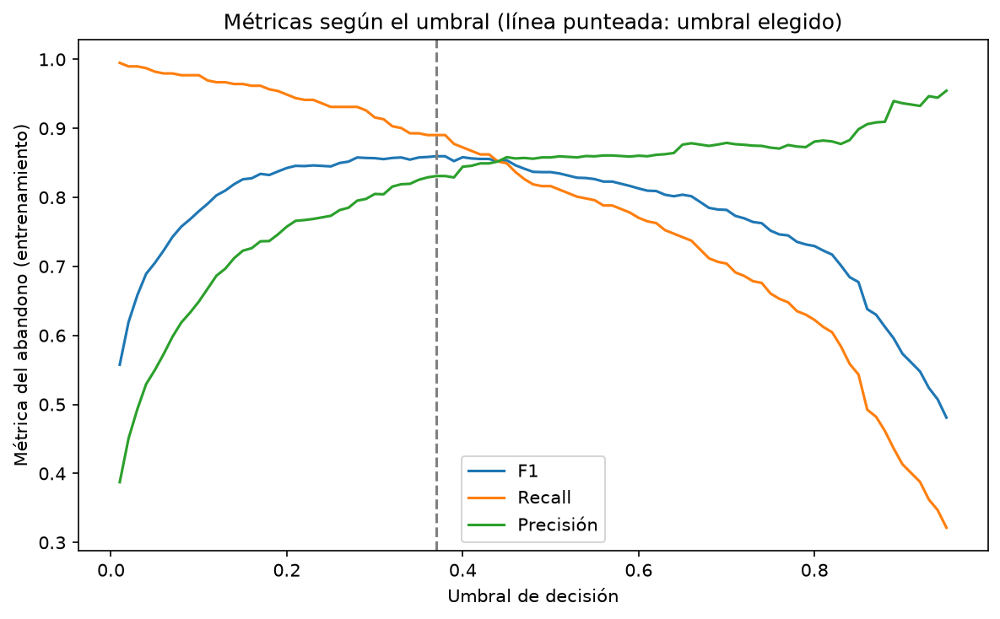
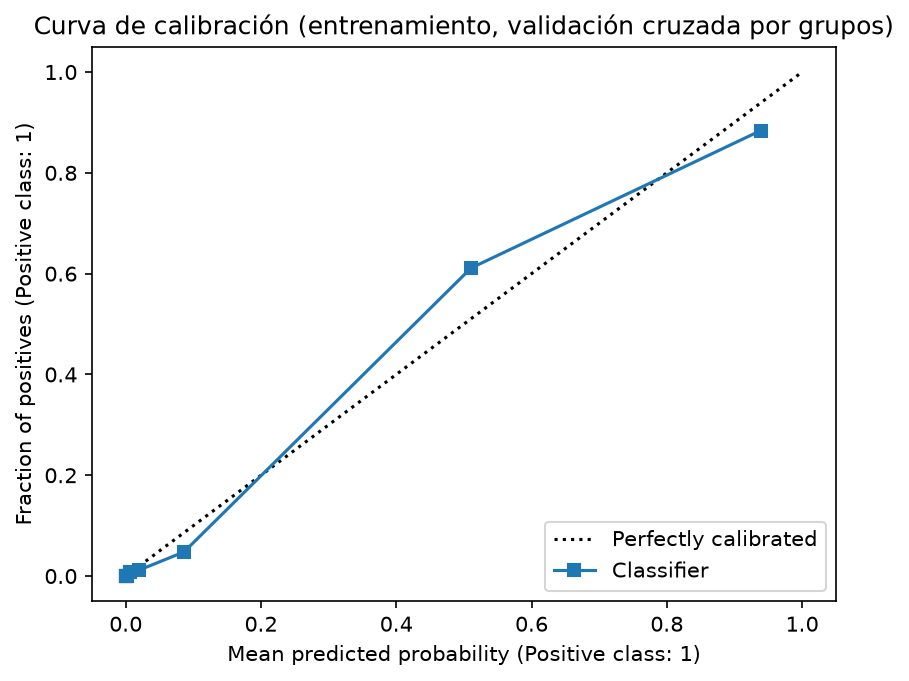
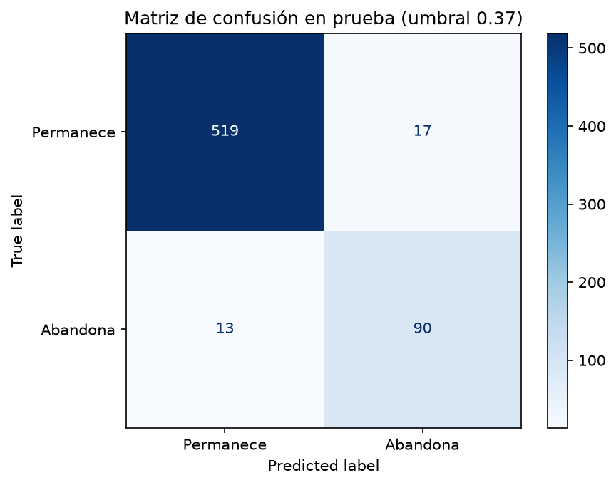
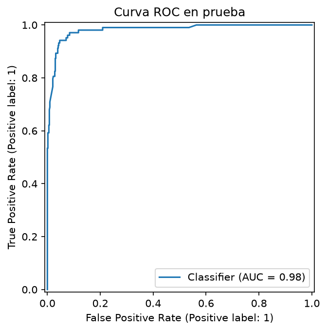

Universidad EIA · Fundamentos de Inteligencia Artificial · 2026-2
Predicción de abandono de clientes de telecomunicaciones
Clasificación de clientes con el conjunto Iranian Churn: comparación de 12 modelos con balanceo de clases, calibración de probabilidades, controles de fuga y aplicación web.
Juan Jose Jaramillo Mora Sebastian Giraldo Franco Martin Restrepo Miguel Angel Zuleta Julian Mora Santiago Zuluaga
Informe final 10 de octubre de 2026
Resumen
Este trabajo aborda la predicción del abandono de clientes de una empresa de telecomunicaciones a partir de nueve meses de uso del servicio. Usamos el conjunto Iranian Churn de UCI, con 3.150 clientes, de los cuales el 15,7 % abandonó en el mes doce. Es una clasificación binaria con desbalance moderado: un modelo que siempre responda «permanece» alcanza un accuracy de 84,4 % sin detectar ni un solo abandono. Por eso la métrica principal es el F1 de la clase que abandona.
El proceso se organizó en cinco cuadernos reproducibles y una aplicación web. Tras el análisis exploratorio y la limpieza (se conservaron las filas repetidas y los valores extremos, y se dejaron fuera Status y Customer Value por falta de documentación sobre su construcción), se separó una muestra de prueba del 20 % agrupando los perfiles idénticos, para que ningún cliente con las mismas entradas quedara repartido entre entrenamiento y prueba. Se decidió el escalador (StandardScaler, sin PCA ni selección de variables) y se compararon 12 clasificadores con 4 estrategias de balanceo (41 combinaciones) mediante validación cruzada estratificada por grupos.
El modelo final es un Random Forest con pesos de clase balanceados, probabilidades calibradas con una curva sigmoide y un umbral de decisión de 0,37. Con validación anidada (una estimación honesta de todo el procedimiento, no solo del modelo ya elegido) el F1 es de 0,851 ± 0,076; en la muestra de prueba, de 0,857, con 90 de 103 abandonos detectados y 17 falsas alarmas entre 536 clientes que permanecen. Un F1 tan alto exige desconfiar: un cuaderno adicional de controles de rigor comprobó que no hay filas duplicadas entre entrenamiento y prueba, que las etiquetas mezcladas al azar hunden el ROC AUC a 0,49 (descartando una fuga mecánica) y que, al agrupar clientes parecidos y no solo idénticos, el F1 baja a 0,811. Por eso leemos el resultado final como «entre 0,81 y 0,86», no como una cifra exacta, y concluimos que el modelo sirve para ordenar clientes por riesgo y priorizar contactos de retención, no como un sistema que dé certeza ni que prometa un ahorro.
Palabras clave: abandono de clientes, telecomunicaciones, clasificación desbalanceada, F1, validación por grupos, calibración de probabilidades, scikit-learn.
Contenido
1Introducción
2El conjunto de datos
3Análisis exploratorio
4Preprocesamiento y partición
5Escalado, PCA y selección de variables
6Balanceo de clases y comparación de modelos
7Modelo final: ajuste, calibración, umbral y evaluación
8Controles de rigor
9Aplicación web
10Conclusiones, limitaciones y trabajo futuro
11Referencias
AAnexo: reproducibilidad y estructura del repositorio
1. Introducción
Retener a un cliente cuesta menos que conseguir uno nuevo, pero una empresa de telecomunicaciones no puede llamar a todos sus clientes para ofrecerles algo que los haga quedarse. Necesita saber a quién llamar primero. Si puede anticipar, con la información de los primeros nueve meses de la suscripción, quién va a abandonar en el mes doce, puede priorizar los contactos de retención hacia los clientes de mayor riesgo.
El objetivo de este trabajo es construir y evaluar un modelo de aprendizaje automático que, con el uso del servicio durante nueve meses, estime si un cliente abandonará en el mes doce. Tratamos el problema como una clasificación binaria supervisada, donde la clase 1 corresponde a un cliente que abandona y la clase 0 a uno que permanece.
El reto central es el desbalance de clases: solo el 15,7 % de los clientes abandona, de modo que un clasificador trivial que nunca avisa obtiene un accuracy de 84,4 %. A eso se suma un reto propio de este conjunto: contiene 300 filas repetidas exactamente y cientos de clientes con el mismo perfil de entrada (las mismas once variables) pero identificadores distintos, sin que el origen de esa repetición esté documentado. Por eso el trabajo se organiza alrededor de cuatro decisiones metodológicas:
usar el F1 de la clase que abandona como métrica principal, acompañado de recall, precisión y ROC AUC, y relegar el accuracy a un papel de referencia;
agrupar los perfiles idénticos al partir entrenamiento y prueba, y mantenerlos juntos también en la validación cruzada, para que un mismo perfil no aparezca a la vez en ambos lados;
aplicar el balanceo de clases dentro del pipeline de validación cruzada, para que el remuestreo solo afecte a los datos de entrenamiento de cada partición;
dedicar un cuaderno completo a controles de rigor que pongan a prueba un resultado inusualmente alto, en lugar de aceptarlo sin más.
El informe sigue el orden de los cinco cuadernos del proyecto (exploración y limpieza; escalado, PCA y selección de variables; balanceo y comparación de modelos; ajuste, calibración y evaluación final; controles de rigor) y describe además la aplicación web que publica el modelo. Todo el código, los datos derivados, los modelos y las figuras están en el repositorio del proyecto, y cada resultado numérico de este documento puede reproducirse ejecutando los cuadernos en orden.
2. El conjunto de datos
Usamos Iranian Churn Dataset, publicado en el repositorio de aprendizaje automático de UCI (identificador 563, licencia CC BY 4.0). Los datos provienen de una empresa de telecomunicaciones iraní y resumen, para cada cliente, el uso del servicio durante nueve meses junto con si abandonó o permaneció en el mes doce. El archivo original tiene 3.150 filas y 14 columnas (13 variables más la respuesta), sin valores faltantes.
De esas 14 columnas usamos once como entrada. Dejamos fuera Status y Customer Value porque el conjunto no documenta con precisión cuándo se miden ni cómo se calculan, y no pudimos descartar que ya reflejaran el desenlace; no las reintrodujimos en ningún momento del proyecto para mejorar el resultado.
Tabla 1. Variables usadas como entrada del modelo.
Variable
Descripción
Tipo
fallas_llamadas
Llamadas fallidas
Numérica (conteo)
quejas
0 sin queja; 1 con queja (no cuenta cuántas)
Binaria
antiguedad
Meses de suscripción
Numérica
nivel_cargo
Nivel de cargo documentado de 0 a 9 (hay 7 clientes en nivel 10)
Ordinal
segundos_uso
Segundos de llamadas
Numérica
frecuencia_uso
Número de llamadas
Numérica (conteo)
frecuencia_sms
Número de mensajes
Numérica (conteo)
numeros_distintos
Números distintos llamados
Numérica (conteo)
grupo_edad
Grupo de edad, de 1 a 5
Ordinal
plan_tarifario
1 pago por uso; 2 contractual
Nominal binaria
edad
Edad (función exacta del grupo: 1→15, 2→25, 3→30, 4→45, 5→55)
Numérica
abandono
1 si el cliente abandonó en el mes doce; 0 si permaneció
Objetivo
La clase objetivo está desbalanceada, aunque menos que en problemas típicos de abandono: 2.655 clientes permanecieron y 495 abandonaron, es decir, 84,29 % frente a 15,71 %. Encontramos además 300 filas repetidas exactamente (idénticas en las 14 columnas), que conservamos porque no existe un identificador que permita decidir si son errores de captura o clientes distintos con la misma huella. Esa decisión obliga a tratar con cuidado la partición de datos, como se explica en la sección 4.

Figura 1. Distribución de la clase en el conjunto completo (3.150 clientes): 84,29 % permanece y 15,71 % abandona.
3. Análisis exploratorio
3.1 Quejas: la señal más fuerte
De los 195 clientes que presentaron una queja, el 83,08 % abandonó; de los 2.316 que no se quejaron, solo el 9,93 %. Es, con diferencia, la variable más asociada al abandono. En el plan de pago por uso (plan 1) el abandono fue del 16,72 %, frente a 2,09 % en el plan contractual (plan 2). Las categorías de nivel de cargo de 5 a 10 tienen entre 7 y 25 registros cada una y ningún abandono observado en esos grupos, lo que no demuestra que su riesgo real sea cero: son muestras pequeñas.

Figura 2. Porcentaje de abandono según si el cliente presentó una queja.
3.2 Variables numéricas
Las variables de uso están concentradas en valores bajos con colas hacia valores altos: en segundos de uso la media es 4.509 y la mediana 3.020; en frecuencia de SMS la media es 72 y la mediana 21. Al comparar por clase, el abandono se asocia con menor uso: la mediana de segundos de uso es 1.235,5 entre quienes abandonan frente a 3.603 entre quienes permanecen, y la de frecuencia de uso es 25 frente a 63. Conservamos los valores extremos, porque aparecer lejos del resto no demuestra por sí solo que sean errores.

Figura 3. Diagramas de caja de las variables numéricas según la clase (entrenamiento).
3.3 Correlación con el abandono
Medimos la relación entre variables con el coeficiente phik (Baak et al., 2020), que se define tanto para variables numéricas como categóricas. Las mayores asociaciones con el abandono son quejas (0,747), segundos_uso (0,464) y frecuencia_uso (0,435); fallas_llamadas obtiene 0,000 con esta medida univariada, lo que no demuestra que sea inútil en combinación con otras variables. Es, en conjunto, bastante más señal que la que encontramos en el problema de sismos del mismo equipo, donde ninguna variable superaba 0,35.

Figura 4. Matriz de correlación phik de las once variables de entrada y el abandono (entrenamiento).
3.4 Edad y grupo de edad
Revisamos si edad y grupo_edad representan la misma información. En entrenamiento solo aparecen cinco parejas: 15↔1, 25↔2, 30↔3, 45↔4 y 55↔5, cada edad corresponde a un único grupo y viceversa. Conservamos ambas variables como entrada y dejamos documentada la redundancia; edad no debe leerse como una edad exacta, sino como una codificación numérica del grupo.
4. Preprocesamiento y partición
4.1 Limpieza
Conservamos las 3.150 filas originales, las 300 repeticiones exactas, los valores extremos y los 7 registros de nivel de cargo 10: ninguna de esas decisiones estaba respaldada por evidencia de que fueran errores. Pusimos nombres sencillos a las columnas y dejamos Status y Customer Value fuera del conjunto de entrada, como se explicó en la sección 2. Los códigos de categorías (plan tarifario, nivel de cargo, grupo de edad) ya venían como números en el archivo original y se conservaron así, sin aplicar ninguna codificación aprendida: el conjunto quedó con 3.150 filas y once entradas más la respuesta.
4.2 Agrupar perfiles antes de partir
Con 300 filas repetidas exactamente y muchas más que comparten las once entradas con identificadores distintos, partir al azar habría dejado el mismo perfil de cliente en entrenamiento y en prueba, lo que infla artificialmente el resultado: el modelo no estaría generalizando, solo recordando. Por eso agrupamos las filas que comparten las mismas once entradas (sin incluir la respuesta) y repartimos esos grupos completos entre entrenamiento y prueba, usando la primera de cinco particiones estratificadas por grupos con semilla 42.
La partición reservó 2.511 filas de entrenamiento (79,71 %, 392 abandonos, 15,61 %) y 639 de prueba (20,29 %, 103 abandonos, 16,12 %). No hay perfiles compartidos entre ambas muestras. El mismo criterio de agrupación se mantuvo dentro de la validación cruzada de los cuadernos siguientes, de modo que ningún grupo cruzara entrenamiento y validación en ninguna partición.
Esta decisión es la razón principal por la que este proyecto no reutiliza las reglas de partición del proyecto hermano de sismos: allí cada fila es un turno sin duplicados relevantes; aquí perfiles repetidos son la norma y agruparlos es indispensable para una evaluación honesta.
5. Escalado, PCA y selección de variables
Esta etapa se hizo únicamente con las 2.511 filas de entrenamiento. Para comparar alternativas se usó siempre el mismo modelo de referencia, una regresión logística con class_weight="balanced", y diez particiones de validación cruzada por grupos (los mismos grupos de perfiles de la sección 4), de modo que ningún grupo apareciera a la vez en entrenamiento y en validación dentro de cada partición. Todo lo que aprende de los datos (escaladores, PCA y selección) se colocó dentro del pipeline.
5.1 Escalado
Se compararon tres opciones: sin escalar, StandardScaler y MinMaxScaler. StandardScaler obtuvo el mayor F1 promedio (0,597), seguido de cerca por no escalar (0,595) y por MinMaxScaler (0,592). La ventaja es pequeña frente a la desviación entre particiones (alrededor de 0,06), pero se eligió StandardScaler siguiendo la regla de mayor F1 promedio, sin afirmar una superioridad concluyente.
Tabla 2. F1 de la clase que abandona en validación cruzada por grupos, según el escalador.
Escalador
F1
Desv.
Precisión
Recall
Sin escalar
0,595
0,067
0,450
0,886
StandardScaler
0,597
0,063
0,454
0,880
MinMaxScaler
0,592
0,065
0,452
0,870
5.2 Análisis de componentes principales
Con StandardScaler, hacen falta 7 componentes para explicar el 90 % de la varianza y 8 para el 95 %, de un total de 11 variables. PCA no mejoró el resultado: el F1 fue 0,597 sin reducción, 0,573 con PCA al 90 % y 0,572 con PCA al 95 %. Decidimos no usar PCA, tanto por el resultado como para conservar la interpretación de las variables, importante cuando el objetivo es priorizar a qué clientes contactar.
Figura 5. Varianza explicada acumulada por componente (ajuste descriptivo con entrenamiento completo).
5.3 Selección de variables
Probamos SelectKBest con ANOVA (f_classif), conservando de 1 a 10 variables de las once. El mejor subconjunto (10 variables) obtuvo un F1 de 0,573, por debajo del 0,597 de usar las once sin selección. La opción de una sola variable alcanzó una precisión de 0,834 pero un recall de apenas 0,413: sus alertas son más confiables, pero deja sin detectar a muchos clientes que sí abandonan. Como ningún subconjunto superó al conjunto completo, se conservaron las once entradas, sin selección.
Figura 6. F1 promedio de las 15 alternativas comparadas (sin reducción, PCA y selección ANOVA).
La preparación elegida para los cuadernos siguientes es, entonces, StandardScaler, sin PCA y sin selección de variables, con un F1 de referencia de 0,597 ± 0,063 (recall 0,880, precisión 0,454). Es una comparación de desarrollo con un modelo lineal de referencia, no la evaluación final, y no garantiza que esta preparación sea la mejor para todos los modelos del siguiente cuaderno.
Simplificación reconocida: dentro de la regresión logística de referencia, nivel de cargo y grupo de edad se tratan como variables numéricas con un efecto lineal en sus niveles, lo cual es una simplificación de su carácter ordinal.
6. Balanceo de clases y comparación de modelos
Se compararon los 12 clasificadores vistos en el curso, ocho individuales (KNN, Naive Bayes, árbol de decisión, regresión logística, SVM, SVM lineal, red neuronal MLP y Random Forest) y cuatro ensambles (Bagging, AdaBoost, Gradient Boosting y Stacking), con cuatro estrategias de balanceo: sin balanceo, class_weight="balanced", SMOTENC (una variante de SMOTE para variables mixtas; Chawla et al., 2002) y submuestreo aleatorio. La estrategia class_weight solo existe en cinco modelos, de modo que se evaluaron 12 × 3 + 5 = 41 combinaciones, todas con validación cruzada por grupos y el escalador y el balanceo dentro de un pipeline de imbalanced-learn (Lemaître et al., 2017).
6.1 Las 41 combinaciones
Los modelos basados en árboles dominan. Stacking con SMOTENC obtuvo el mayor F1 (0,862), seguido de Random Forest con class_weight (0,858) y la red neuronal sin balancear (0,838). Los modelos lineales quedan muy por debajo: la regresión logística no supera 0,60 en ninguna estrategia, y la SVM lineal tampoco. La diferencia frente al problema de sismos del equipo (donde los modelos lineales eran los mejores) es notable y se explica en la sección 6.2.

Figura 7. F1 de la clase que abandona para las 41 combinaciones (validación cruzada por grupos). Las celdas vacías son combinaciones que no existen.
Tabla 3. Los tres candidatos que pasaron al ajuste (uno por familia de modelo).
Modelo
Estrategia
F1
Desv.
Recall
Precisión
ROC AUC
Stacking
SMOTENC
0,862
0,051
0,895
0,834
0,981
Random Forest
class_weight
0,858
0,047
0,898
0,826
0,982
Red neuronal (MLP)
Sin balanceo
0,838
0,032
0,832
0,847
0,983
Stacking y Random Forest están a solo 0,0036 de F1 de distancia, dentro del ruido de la validación cruzada: es un empate práctico. La red neuronal rinde bien incluso sin balancear sus datos de entrenamiento. Pasaron al ajuste las tres mejores combinaciones de familias de modelo distintas (filas resaltadas).
6.2 Por qué los árboles ganan aquí y los modelos lineales ganan en sismos
La señal del abandono está en combinaciones de variables, no en variables aisladas: entre quienes se quejaron y además usaron poco el servicio, el abandono llega a cerca del 90-100 % según el cruce exacto, mientras que entre quienes no se quejaron y usaron mucho el servicio baja a 2 %. Un modelo lineal como la regresión logística suma el efecto de cada variable por separado y no puede expresar directamente «quejó y usó poco»; un árbol de decisión sí, porque puede partir primero por quejas y luego por uso. Revisamos si esta ventaja de los árboles podía deberse a una fuga entre particiones y no encontramos evidencia (sección 8).
6.3 La trampa del accuracy
Sin balancear, varios modelos rondan el 93-95 % de accuracy casi sin detectar abandonos, muy cerca del 84,4 % de responder siempre «permanece» (que tiene F1 de 0). Guiarse por el accuracy habría llevado, igual que en el problema de sismos del equipo, a preferir justo los modelos menos útiles.

Figura 8. Accuracy contra F1 en las 41 combinaciones; la línea punteada es el accuracy de un modelo que siempre responde «permanece».
7. Modelo final: ajuste, calibración, umbral y evaluación
7.1 Ajuste de hiperparámetros
Los hiperparámetros de los tres candidatos se buscaron con GridSearchCV usando la precisión promedio (average precision), que mide qué tan bien ordena el modelo a los clientes por riesgo y no depende de un umbral fijo. Las probabilidades se calibraron después con una curva sigmoide (Platt, 1999) ajustada sobre predicciones fuera de pliegue, y el umbral se eligió por separado maximizando el F1 sobre esas mismas probabilidades calibradas de entrenamiento.
7.2 Estimación anidada del rendimiento
Para saber cuánto F1 cabe esperar de todo el procedimiento (búsqueda de hiperparámetros, calibración y umbral), y no solo del modelo ya elegido con esos mismos datos, se repitió el procedimiento completo dentro de una validación anidada por grupos: 5 particiones externas y 5 internas, siempre respetando los grupos de perfiles. Cada medición final se hizo sobre filas que ni los hiperparámetros, ni la calibración, ni el umbral habían visto.
Tabla 4. Estimación anidada de los tres candidatos (entrenamiento, sin tocar prueba).
Modelo
Estrategia
F1 anidado
F1 con selección
Umbral
Recall
Precisión
Stacking
SMOTENC
0,849
0,860
0,34
0,895
0,828
Random Forest
class_weight
0,851
0,860
0,37
0,890
0,831
Red neuronal (MLP)
Sin balanceo
0,839
0,859
0,35
0,913
0,810
El F1 anidado (0,839 a 0,851) queda por debajo del F1 «con selección» (0,859 a 0,860), que es el que se obtiene al repetir el procedimiento con todo el entrenamiento y medir sobre las mismas filas con las que se eligieron hiperparámetros y umbral: esa diferencia, de 0,009 a 0,020, es el optimismo de no separar la elección de la medición. Random Forest tiene el mayor F1 anidado, pero supera a Stacking por apenas 0,0024 (0,03 desviaciones): un empate práctico. Se escogió Random Forest con class_weight por la regla de mayor F1 anidado, con el argumento adicional de ser el más rápido de entrenar.
7.3 Modelo final, umbral y calibración
El modelo final es un Random Forest (400 árboles, profundidad máxima 15, hojas mínimas de 1) con pesos de clase balanceados, escalado con StandardScaler, probabilidades calibradas con una curva sigmoide y umbral de 0,37, todo ajustado con las 2.511 filas de entrenamiento y las diez particiones por grupos. Con ese umbral, en entrenamiento el F1 es 0,860, el recall 0,890 y la precisión 0,831. La curva es plana alrededor del óptimo: los ocho mejores umbrales, entre 0,28 y 0,40, dan un F1 de entre 0,857 y 0,860, así que el valor exacto no es crítico. Bajar el umbral hacia 0,28 sube el recall a 0,931 casi sin perder F1 (0,858), a costa de la precisión (0,795): es una decisión de negocio, según cuánto cueste contactar a un cliente que de todas formas iba a quedarse frente a perder uno que iba a irse.

Figura 9. F1, recall y precisión según el umbral (validación cruzada sobre entrenamiento).

Figura 10. Curva de calibración en validación cruzada por grupos.
Las probabilidades calibradas de entrenamiento tienen una media de 0,156, prácticamente igual a la proporción real de abandono (0,1561): en promedio, el modelo está bien calibrado.
7.4 Evaluación en la muestra de prueba
El modelo final, con el calibrador y el umbral ya congelados, se evaluó una sola vez en los 639 clientes de prueba (103 abandonos). Detectó 90 de los 103 abandonos (recall de 0,874) y dejó pasar 13. Dio 17 falsas alarmas entre los 536 clientes que permanecen (3,2 %), de modo que de sus 107 alertas 90 fueron ciertas (precisión de 0,841). El accuracy fue 0,953, frente a 0,839 de responder siempre «permanece», que no detecta ningún abandono.
Tabla 5. Métricas del modelo final: estimación anidada de entrenamiento y prueba.
Métrica (clase que abandona)
Validación anidada
Prueba
F1
0,851 ± 0,076
0,857
Recall
0,890
0,874
Precisión
0,831
0,841
ROC AUC
0,982
0,982
Precisión promedio
0,900
0,933
Brier
0,037
0,035
Accuracy
—
0,953
El 0,857 de prueba cae dentro del rango de la estimación anidada (0,851 ± 0,076): no hay señal de que el resultado en prueba sea un golpe de suerte respecto a lo que el procedimiento ya anticipaba con solo entrenamiento. Como la prueba tiene relativamente pocos abandonos (103), calculamos también un intervalo del 95 % por bootstrap de grupos: remuestreamos 1.000 veces los 571 perfiles distintos de prueba (no filas sueltas) y recalculamos las métricas. El intervalo del F1 va de 0,800 a 0,914, el del recall de 0,800 a 0,933 y el de la precisión de 0,757 a 0,929: el 0,857 es nuestra mejor estimación puntual, no una cifra exacta.

Figura 11. Matriz de confusión en la muestra de prueba (umbral 0,37).

Figura 12. Curva ROC en la muestra de prueba (AUC 0,982).
7.5 Priorizar contactos
Para el uso previsto (decidir a quién llamar primero) importa más el orden por riesgo que el umbral exacto. Contactando solo al 10 % de los clientes de prueba con mayor probabilidad (64 clientes), el 95 % de verdad abandonaba (precisión) y se cubría el 59 % de los abandonos totales (recall), 5,9 veces más que contactar al azar. Contactando al 20 % (128 clientes) se cubre el 94 % de los abandonos con una precisión de 76 %.
8. Controles de rigor
Un F1 de 0,857, muy por encima del 0,59 que obtenía un modelo lineal con las mismas variables (sección 6), exige desconfiar antes de aceptarlo. Dedicamos un quinto cuaderno a ponerlo a prueba con cinco controles independientes, todos ejecutados sin tocar de nuevo la decisión del modelo final.
8.1 Integridad de la partición
Comprobamos que los archivos train.csv y test.csv coinciden exactamente con los que generó el notebook 01 (mismas filas, mismo orden, mismos valores) y que ningún perfil de las once entradas aparece a la vez en entrenamiento y en prueba: de los 571 perfiles distintos de prueba, cero coinciden con alguno de los 2.344 perfiles distintos de entrenamiento.
8.2 Etiquetas mezcladas al azar
Si existiera una fuga mecánica entre las entradas y la respuesta, un modelo seguiría acertando incluso con etiquetas mezcladas al azar. Entrenamos el mismo procedimiento con las etiquetas de entrenamiento permutadas: el ROC AUC cayó de 0,982 (etiquetas reales) a 0,492 (etiquetas mezcladas, prácticamente el 0,5 del azar) y el F1 a umbral 0,5 cayó de 0,859 a 0,147. El modelo no tiene ningún atajo que le permita acertar sin que la relación entre entradas y abandono sea real.
8.3 Agrupar perfiles parecidos, no solo idénticos
El control más exigente: en vez de agrupar solo las filas con las once entradas exactamente iguales, agrupamos por rangos más gruesos de las variables numéricas (una agrupación más estricta, con 1.299 grupos en vez de los 2.255 originales), de modo que clientes parecidos pero no idénticos también queden del mismo lado de la partición. Con esta agrupación más dura el F1 bajó de 0,859 a 0,811, el ROC AUC de 0,982 a 0,972 y la precisión promedio de 0,891 a 0,843. El resultado sigue siendo alto, pero confirma que una parte de él (unos 0,05 de F1) depende de que haya clientes muy parecidos en ambos lados de la partición original.
Tabla 6. Controles de rigor: etiquetas mezcladas y agrupación más estricta.
Control
ROC AUC
F1 (umbral 0,5)
Grupos
Etiquetas reales (el proyecto)
0,982
0,859
2.255
Etiquetas mezcladas al azar
0,492
0,147
2.255
Agrupación más estricta
0,972
0,811
1.299
8.4 Vecinos más cercanos y duplicados tras balanceo
Revisamos si los vecinos muy cercanos de cada fila de entrenamiento comparten etiqueta más de lo esperable, lo que delataría una fuga entre particiones: con una distancia máxima de 0,5 (en variables normalizadas), el 93,05 % de los vecinos más cercanos comparte etiqueta, un porcentaje que sube suavemente a medida que se relaja la distancia (81,8 % a distancia 0,05) y no muestra el salto abrupto que señalaría duplicados ocultos entre entrenamiento y validación. También comprobamos que SMOTE y SMOTENC generan clientes sintéticos con valores plausibles de quejas y plan_tarifario (combinaciones ya existentes en los datos reales), no copias ni valores imposibles.
8.5 Conclusión de los controles
Ningún control encontró evidencia de una fuga mecánica (duplicados entre particiones, atajo por etiquetas, vecinos sospechosos). Sí confirmamos que el resultado es sensible a qué tan parecidos pueden estar los clientes de ambos lados de la partición. Por eso, en las conclusiones de este informe, el F1 final se reporta como un rango (0,81 a 0,86) y no como la cifra puntual de 0,857.
9. Aplicación web
El modelo se publicó en una aplicación construida con Gradio (Abid et al., 2019), que carga el modelo exportado por el cuarto cuaderno, la metadata y los clientes reales de la muestra de prueba. Se ejecuta en local con uv run python app.py y está preparada para ejecutarse en Google Colab. Tiene tres pestañas:
Evaluar un cliente. Un formulario con las once entradas del modelo, cada una con su descripción. Muestra el riesgo estimado en porcentaje, un veredicto según el umbral de 0,37 y los factores que más empujan el riesgo de ese cliente en concreto (comparando cada entrada contra la mediana de entrenamiento). Botones de ejemplo cargan un cliente tranquilo, uno justo en el límite del umbral, uno en riesgo alto o uno real al azar de la muestra de prueba, mostrando en ese último caso qué ocurrió de verdad.
Priorizar contactos. Recibe un archivo CSV con un cliente por fila (en español o con los nombres originales en inglés del conjunto de UCI) y devuelve una tabla ordenada por riesgo, con un resumen y un archivo descargable para priorizar las llamadas de retención.
Sobre el modelo. Muestra el modelo, la estrategia de balanceo, la calibración, el escalador, las entradas, el umbral, las métricas de validación anidada y de prueba, la fecha de entrenamiento y una nota sobre cómo leer los resultados, incluida la advertencia del rango 0,81-0,86 de la sección 8.
La aplicación incluye un aviso visible de que es un proyecto académico, que no estima si una oferta concreta evitará el abandono ni cuánto ahorraría hacerlo, y que no reemplaza el criterio del equipo de retención. Se probó que la probabilidad calculada por la aplicación coincide con la del cuaderno final en los 639 clientes de prueba, que un campo vacío o un valor negativo produce un mensaje de error claro, que un CSV con una columna faltante indica cuál falta, y que las métricas de la pestaña «Sobre el modelo» coinciden con la metadata exportada. La prueba en Google Colab queda pendiente de realizarse.
10. Conclusiones, limitaciones y trabajo futuro
10.1 Conclusiones
El desbalance y los perfiles repetidos definen el problema. Con 15,7 % de abandono y perfiles idénticos repetidos cientos de veces, tanto el accuracy como una partición que no agrupe perfiles engañan. La métrica principal es el F1 de la clase que abandona y la partición se hizo agrupando perfiles.
La señal es fuerte y no es lineal. Con phik de 0,747, las quejas son, por lejos, la variable más asociada al abandono, seguida del uso del servicio. La señal está en combinaciones de variables (quejas y poco uso a la vez), por lo que los árboles y los ensambles superan ampliamente a los modelos lineales (0,86 frente a 0,57-0,60 de F1).
El modelo final es útil para priorizar contactos. Random Forest con pesos balanceados, calibrado, detecta 90 de 103 abandonos de la muestra de prueba con solo 17 falsas alarmas entre 536 clientes que permanecen, y contactando al 10 % de mayor riesgo se cubre el 59 % de los abandonos con 95 % de precisión.
Un resultado alto exige controles, y los superó en lo esencial. Las etiquetas mezcladas hunden el ROC AUC a 0,49 y no hay duplicados entre particiones: no hay fuga mecánica. Pero agrupar clientes parecidos y no solo idénticos baja el F1 de 0,859 a 0,811, así que reportamos el resultado como un rango, entre 0,81 y 0,86, y no como una cifra exacta.
10.2 Limitaciones
Sin fechas. El conjunto no trae fechas ni el momento exacto de cada medición, de modo que no se puede descartar que alguna entrada (por ejemplo, el uso igual a cero) ya refleje un abandono que ya había ocurrido.
Dependencia de perfiles parecidos. El control de agrupación estricta (sección 8.3) muestra que parte del F1 depende de que clientes muy parecidos puedan quedar en ambos lados de la partición.
Variables excluidas por trazabilidad, no por evidencia de fuga.Status y Customer Value se dejaron fuera por falta de documentación, no porque se haya demostrado que filtran el desenlace; tampoco se reintrodujeron para mejorar el resultado.
Datos de una sola empresa. No sabemos cómo se comportaría el modelo en otro periodo, otro mercado o con otra definición de abandono.
El umbral es una decisión de negocio. El 0,37 maximiza el F1, pero el umbral adecuado depende de cuánto cueste contactar a un cliente frente a perderlo; no lo estimamos en este trabajo.
No estimamos el efecto de una intervención. El modelo ordena a los clientes por riesgo de abandono, no estima si una oferta de retención cambiaría ese riesgo ni cuánto ahorraría.
10.3 Trabajo futuro
Conseguir datos con fecha para validar con una partición temporal y descartar por completo que alguna entrada refleje el desenlace.
Revisar Status y Customer Value con su definición oficial, para decidir con evidencia si pueden usarse.
Costos asimétricos entre contactar de más y perder un cliente, y selección del umbral a partir de esos costos.
Un diseño experimental (A/B) que mida si contactar a los clientes de mayor riesgo reduce el abandono real.
Datos de otra empresa o periodo, y despliegue permanente de la aplicación.
11. Referencias
Abid, A., Abdalla, A., Abid, A., Khan, D., Alfozan, A. y Zou, J. (2019). Gradio: Hassle-free sharing and testing of ML models in the wild. arXiv:1906.02569.
Baak, M., Koopman, R., Snoek, H. y Klous, S. (2020). A new correlation coefficient between categorical, ordinal and interval variables with Pearson characteristics. Computational Statistics & Data Analysis, 152, 107043.
Chawla, N. V., Bowyer, K. W., Hall, L. O. y Kegelmeyer, W. P. (2002). SMOTE: Synthetic Minority Over-sampling Technique. Journal of Artificial Intelligence Research, 16, 321–357.
Lemaître, G., Nogueira, F. y Aridas, C. K. (2017). Imbalanced-learn: A Python toolbox to tackle the curse of imbalanced datasets in machine learning. Journal of Machine Learning Research, 18(17), 1–5.
Pedregosa, F. et al. (2011). Scikit-learn: Machine learning in Python. Journal of Machine Learning Research, 12, 2825–2830.
Platt, J. (1999). Probabilistic outputs for support vector machines and comparisons to regularized likelihood methods. En A. J. Smola et al. (Eds.), Advances in Large Margin Classifiers. MIT Press.
Anexo. Reproducibilidad y estructura del repositorio
El entorno se gestiona con uv (pyproject.toml y uv.lock propios de esta carpeta, Python 3.11) y los cuadernos también están pensados para correr en Google Colab. Para reproducir los resultados basta con clonar el repositorio, entrar a la carpeta churn/, ejecutar uv sync y correr los cinco cuadernos en orden; cada uno lee lo que dejó el anterior.
Tabla A1. Cuadernos, qué hacen y qué archivos generan.
Archivo
Responsabilidad
Genera
00_Auditoria_Datos.ipynb
Auditoría del conjunto original: esquema, nulos, duplicados, dominios
resultados/auditoria_*.csv, AUDITORIA.md
01_EDA_Limpieza_Churn.ipynb
Carga, exploración, limpieza, agrupación de perfiles y partición
train.csv, test.csv, test_original.csv, grupos de entrenamiento
Integridad de la partición, etiquetas mezcladas, agrupación estricta, vecinos
resultados/05_*.csv
app.py
Aplicación Gradio
—
Las reglas del proyecto (estilo de código, partición por grupos, ausencia de fuga de información, comentarios en español) están en churn/AGENTS.md; el avance, las decisiones y la bitácora, en churn/ESTADO.md; el plan detallado, en churn/PLAN.md. Este proyecto es independiente del proyecto hermano de predicción de peligro sísmico que ocupa la raíz del repositorio: no reutiliza sus datos, particiones ni modelos, aunque comparte reglas generales de estilo de clase.